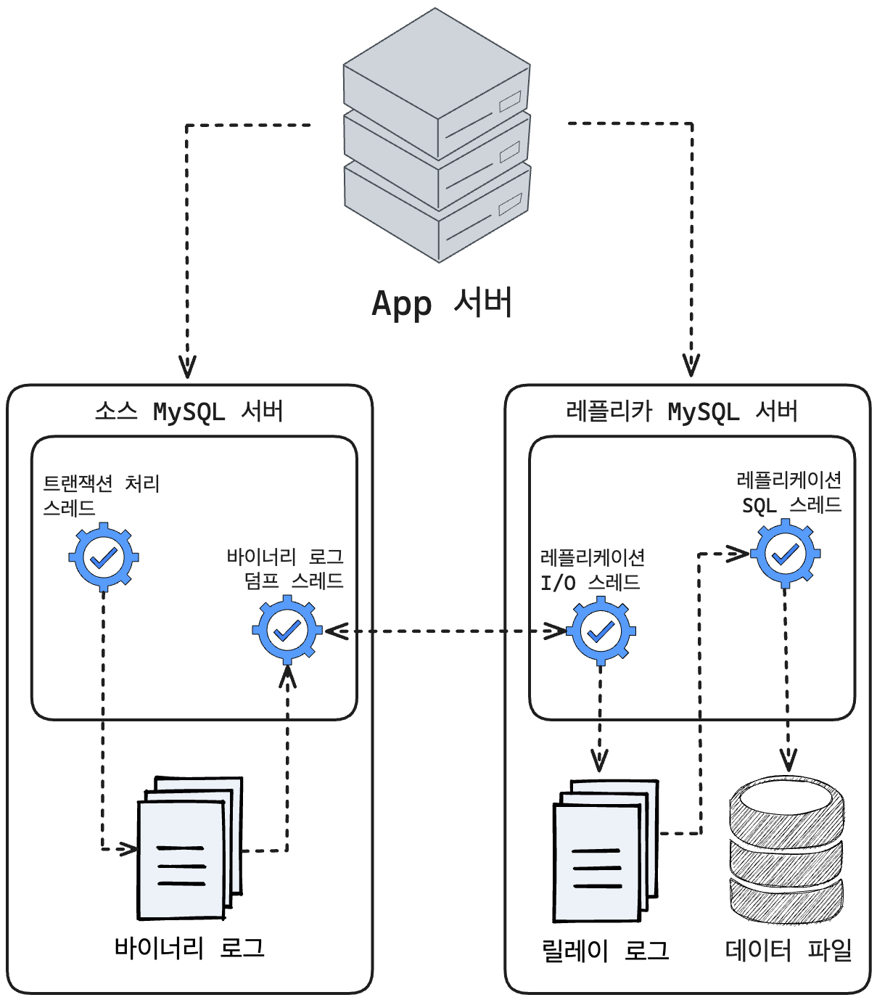

✨ 데이터베이스 운영에서 가장 중요한 두 가지 요소는 확장성과 가용성 입니다.
이 두 요소를 위해 가장 일반적으로 사용되는 기술이 '복제(Replication)' 입니다.
Replication 사용 이유

-
스케일 아웃 (Scale-out)
- 대량의 트래픽을 처리하기 위해 DB 서버의 개수를 늘려 실행 되는 쿼리를 분산시키기 위해 사용됩니다.
- 스케일 아웃은 스케일 업 방식보다 갑자기 늘어나는 트래픽을 대응하는 데 훨씬 더 유연한 구조입니다.
-
데이터 백업
- DB 백업은 필수 입니다. (많이 하면 할수록 좋습니다. 👍)
- 하지만 사용중인 DB를 백업하게 되면 DBMS가 서버의 자원을 공유해서 사용하기 때문에,백업으로 인해 DBMS에서 실행 중인 쿼리들이 영향을 받을 수 있으며, 처리속도가 늦어져 문제가 발생할 수 있습니다.
- 이러한 문제를 방지하기 위해 레플리카 서버를 구축하고, 백업은 여기서 실행 됩니다.
- 📌 백업용 레플리카 서버는 소스 서버가 문제가 생겼을 때를 대비한 서버의 역할
-
데이터 분석
- 많은 기업에서 데이터 분석을 목적으로 분석용 쿼리를 사용하게 됩니다.
- 이러한 분석용 쿼리는 대량의 데이터를 집계 연산을 포함해서 하기 때문에, 복잡하고 무겁습니다.
- 서버의 많은 리소스를 사용하기 때문에 여분의 레플리카 서버를 구축해 분석용 쿼리 전용으로 실행하는 것이 좋습니다.
-
데이터 지리적 분산
- DB 서버와 App 서버가 서로 떨어져 있는 경우, 두 서버 간 통신 시간은 거리만큼 늘어납니다.
- 이를 위해 DB 서버를 복제해 App 서버가 위치한 곳에 레플리카 서버를 구축해 응답 속도를 개선할 수 있습니다.
Replication 사용해보기 (with Docker-compose)
📂 폴더 구조 소개
db
ㄴ master
ㄴ Dockerfile
ㄴ master.cnf
ㄴ slave
ㄴ Dockerfile
ㄴ slave.cnf
docker-compose.yml
📄 docker-compose.yml 작성
version: "3"
services:
master-db:
build:
context: ./
dockerfile: db/master/Dockerfile
container_name: master-db
image: mysql:8.0.30
restart: always
ports:
- 3308:3306
environment:
MYSQL_DATABASE: "mydb"
MYSQL_USER: "user"
MYSQL_PASSWORD: "password"
MYSQL_ROOT_PASSWORD: "password"
volumes:
- ~/db/master-db:/var/lib/mysql
- ~/db/master-db:/var/lib/mysql-files
command:
- --character-set-server=utf8mb4
- --collation-server=utf8mb4_unicode_ci
networks:
- net-mysql
slave-db:
build:
context: ./
dockerfile: db/slave/Dockerfile
container_name: slave-db
image: mysql:8.0.33
restart: always
ports:
- 3309:3306
environment:
MYSQL_DATABASE: "mydb"
MYSQL_USER: "user"
MYSQL_PASSWORD: "password"
MYSQL_ROOT_PASSWORD: "password"
volumes:
- ~/db/slave-db:/var/lib/mysql
- ~/db/slave-db:/var/lib/mysql-files
command:
- --character-set-server=utf8mb4
- --collation-server=utf8mb4_unicode_ci
networks:
- net-mysql
networks:
net-mysql:
driver: bridge
[master] master.cnf 파일 > etc/mysql/my.cnf
[mysqld]
server_id=10
log_bin=mysql-bin
default_authentication_plugin=mysql_native_password
binlog_do_db=
- server_id : 서버의 고유 식별자 입니다.
복제 DB 와는 다르게 각각 설정해줘야 합니다. - log_bin : 바이너리 로그의 이름을 지정할 수 있습니다.
- binlog_do_db : 복제할 데이터베이스를 지정합니다.
(따로 지정해주지 않으면 mydatabase 라는 기본값이 들어갔습니다. 😓) - default_authentication_plugin : 기본 인증 플러그인을 지정하는데 사용됩니다.
mysql_native_password 는 전통적인 비밀번호 인증 방식을 사용하는 플러그인 입니다.
[master] Dockerfile
FROM mysql:8.0.30
ADD ./db/master/master.cnf /etc/mysql/my.cnf
위의 설정 값을 기본 설정 파일로 옮길 수 있도록 구성했습니다.
[slave] slave.cnf 파일 > etc/mysql/my.cnf
[mysqld]
server_id=11
relay_log=/var/lib/mysql/mysql-relay-bin
log_slave_updates
read_only
default_authentication_plugin=mysql_native_password
- relay_log : 릴레이 로그 파일명을 지정할 수 있습니다.
릴레이 로그는 마스터 서버의 바이너리 로그에서 읽어온 이벤트(트랜잭션) 정보가 저장됩니다.
여기에 저장된 이벤트들이 Replication SQL 스레드에 의해 레플리카 서버에 적용됩니다. - log_slave_updates : 레플리카 서버에서 수신한 변경 작업도 이벤트 로그에 적용할 지 여부를 지정할 수 있습니다.
- read_only : 레플리카 서버를 읽기 전용으로 설정하는데 사용 됩니다.
[slave] Dockerfile
FROM mysql:8.0.33
ADD ./db/slave/slave.cnf /etc/mysql/my.cnf
위의 설정 값을 기본 설정 파일로 옮길 수 있도록 구성했습니다.
도커 실행 후... 🥸
-
Master DB 에서 실행하기
# replication 담당 사용자 생성 및 권한 적용 # (테스트라 '%' 적용 했지만, 실무에서는 특정 IP로 지정해야 합니다!) CREATE USER 'repl_user'@'%' IDENTIFIED BY '1234'; GRANT REPLICATION SLAVE ON *.* TO 'repl_user'@'%'; FLUSH PRIVILEGES; # Master 정보 확인 SHOW MASTER STATUS\G # 결과값 *************************** 1. row *************************** File: mysql-bin.000003 # ✨ 이 값(바이너리 파일명)과 Position: 670 # ✨ 이 값(위치 값)을 기억해야 합니다. Binlog_Do_DB: Binlog_Ignore_DB: mysql Executed_Gtid_Set: -
Slave DB 에서 실행하기
# Replication 설정 CHANGE REPLICATION SOURCE TO \ SOURCE_HOST='master-db', \ SOURCE_PORT=3306, \ SOURCE_USER='repl_user', \ SOURCE_PASSWORD='1234', \ SOURCE_LOG_FILE='mysql-bin.000003', \ # ✨ 위에서 나온 정보 값 작성하기 SOURCE_LOG_POS=670, \ GET_SOURCE_PUBLIC_KEY=1; # 시작하기 start slave; # Replica 상태 보기 show slave status\G; *************************** 1. row *************************** Slave_IO_State: Waiting for source to send event Master_Host: master-db Master_User: repl_user Master_Port: 3306 Connect_Retry: 60 Master_Log_File: mysql-bin.000003 Read_Master_Log_Pos: 837 Relay_Log_File: mysql-relay-bin.000002 Relay_Log_Pos: 326 Relay_Master_Log_File: mysql-bin.000003 Slave_IO_Running: Yes # ✨ 이 부분과 Slave_SQL_Running: Yes # ✨ 이 부분이 활성화 되었다면 OK!
🎬 끝
이후에 마스터 서버에서 테이블을 만들어 보면...
바로 레플리카 서버로 동기화 되는 것을 확인할 수 있었습니다. 😁
🤔 Master vs Slave 의 버전이 다른 이유는?
동일하게 적용 했더니... 😓
cnf 파일이 master, slave 각각 적용되지 않고 하나의 파일로만 적용 됬습니다.
방법을 이리저리 찾아봤는데, 해결 방법을 찾지 못해 버전을 달리 했습니다. (depend_on 설정으로는 턱도 없었습니다. 🫠)
💡 MySQL 버전이 다른 경우 레플리카 서버의 버전이 높아야 합니다.